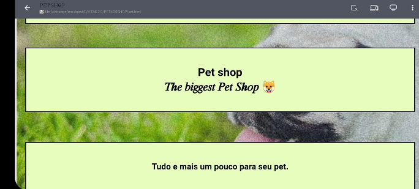
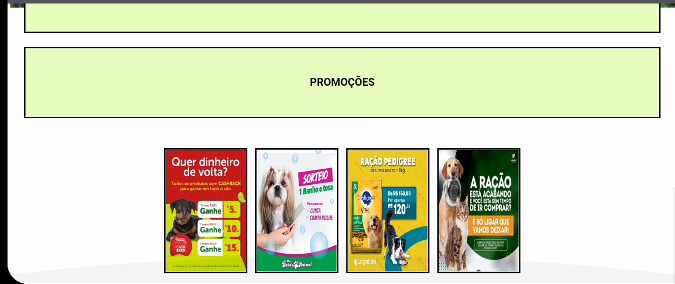
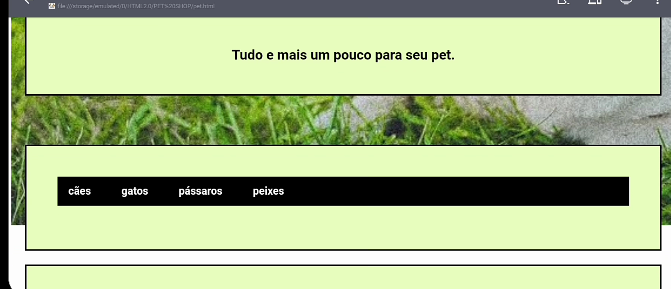
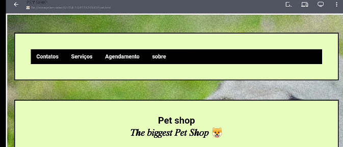
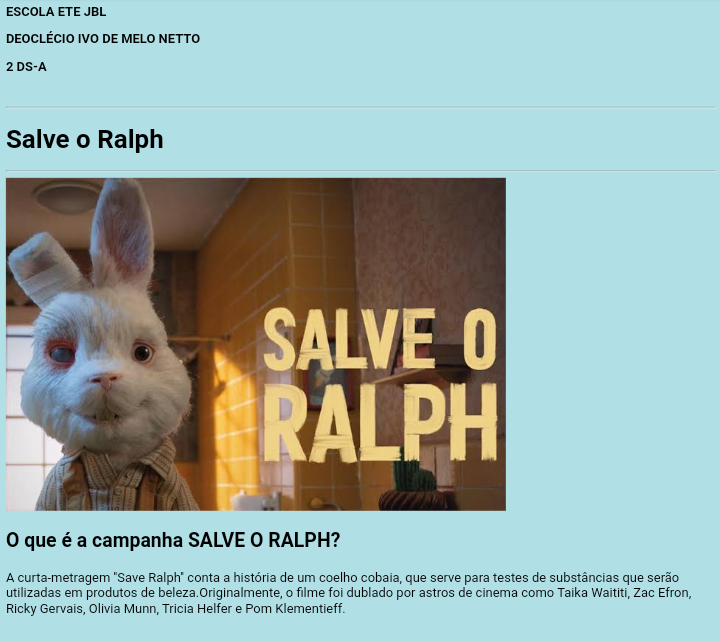
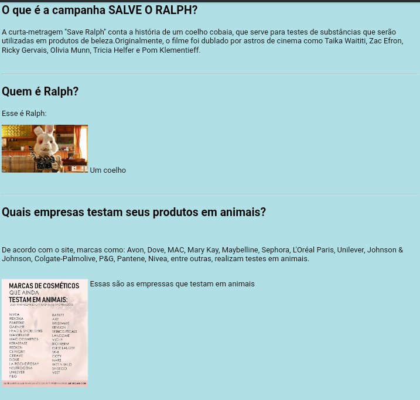
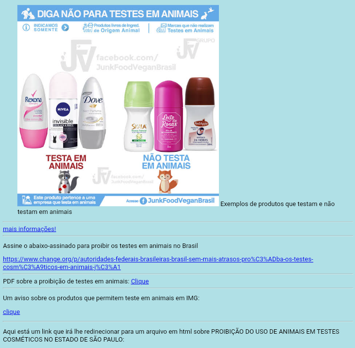

Olá, meu nome é Deoclécio Netto. Isto é um local onde você poderar observar e analisár os trabalhos produzidos ao longo de minha carreira como programador.
Iniciando os estudos sobre sites web, o primeiro projeto foi a criação de um site com tema PET-SHOP
como podemos obsevar, esse era a interface inicial do site:
   Já o segundo foi elaboração de um site q iluatrava o programa que estava acontecendo no ano de 2021, " SALVE RALPH".
  Nosso site está em construção, mas estamos prontos para começar. Quer saber mais sobre nós falar sobre seu projeto ou apenas dizer um oi? Deve-nos entrar em contato e entraremos em contato mais rápido possivel.